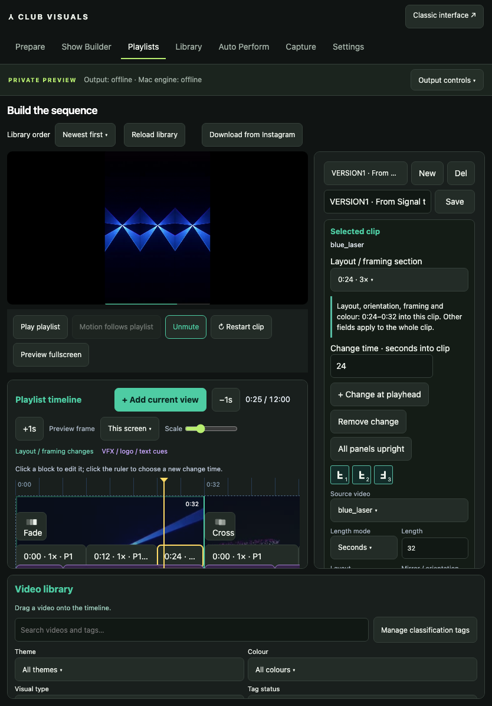

10. Mac output and iPad control
Keep preparation private and take a rehearsed composition to the live display deliberately.
Prepare the display
- Run the app on the Mac and connect the projector/display.
- Click Open output screen. The dedicated Chromium output window contains the resident Mac playback engine.
- Move that window to the intended display before the show.
- Use Mac fullscreen to control that dedicated window. The button reports its actual state.
- Send a prepared look or play a rehearsed playlist on Mac.
The clean output omits the editor's library, settings and timeline. The dedicated output uses its own browser profile, leaving ordinary personal browser tabs alone. Keep one playout engine active for a performance. Keep the Mac awake and the server running.
Connect the iPad
- Put Mac and iPad on the same network.
- On the Mac editor, click Connect iPad.
- Generate the current link, choose the adapter/network used by the iPad if several appear, then copy the link.
- Open it in Safari on the iPad. The
remote=1link selects controller mode explicitly. - Check controller, engine and output status separately before sending a show.


Generate a new link after changing Wi-Fi. A link's current IP address is local to that network. Guest/venue Wi-Fi can isolate clients, so a reachable internet connection alone does not prove the iPad can reach the Mac. Check incoming Python firewall permission and confirm the Mac is awake. Ordinary LAN camera capture has additional browser restrictions; connect camera input from the Mac's localhost editor.
Preview versus live
Selecting sources, editing sections, playing the preview and auditioning effects remain private. Send to Mac copies the prepared look from its current position, including framing and effect state. Later edits remain private until another take. Play this playlist on Mac sends the current edited playlist, including unsaved entries and loop preference. Use Next on Mac and Stop Mac for live control. Saving a playlist alone changes neither the displayed look nor live playback.
Preview fullscreen affects this controller's private preview. Mac fullscreen affects the dedicated output window. If a browser denies native preview fullscreen, a window-filling preview is used instead; press Escape to return. Do not confuse closing an audio setup panel with stopping the Mac engine.
Control ownership and disconnection
When the iPad takes remote control, the Mac editor is locked and identifies the controller. Return control to Mac releases that ownership; the iPad can keep editing privately but must explicitly take remote control again before sending live commands. The locked Mac can still open/focus its output window.
If the iPad stops sending its heartbeat, the Mac editor unlocks after about eight seconds. The resident engine continues its existing playlist. This protects a performance when the iPad sleeps or disconnects; it is not a backup for losing the Mac server or power. Reconnect, check ownership/status and only then send further live changes.
Audio and compatible previews
For venue audio, open the Mac output's audio setup and choose the Mac microphone/USB device. Grant permission locally before relying on iPad commands. The iPad's Mac-audio controls can start/stop Auto Perform and change its live settings once prepared. The iPad does not need microphone access for Mac-driven audio.
Safari preview copies are prepared and cached as H.264/AAC, with a maximum 1280-pixel edge and 30 fps. A first-use conversion can take time; the Mac output still uses original media. Tap Play if iPadOS blocks autoplay. A slow compatible preview does not mean the original file has been overwritten.